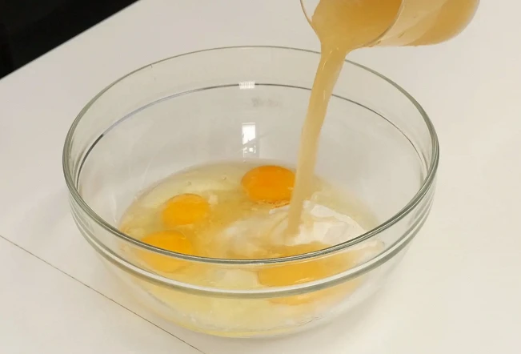

Cafe "Janis"

SASTĀVDAĻA
- Tempura maisījums 30 gr
- Kviešu milti 160gr
- Baltie kāposti 480gr
- Cūkgaļas vēders 160gr
- 4 vistas ola
SOLI PA SOLIM GATAVOŠANAS RECEPTE
1 SOLIS
Lai pagatavotu tenkas, sajauciet tempura miltus ar 40 mililitriem auksta ūdens līdz gludai. Nelielā sautētā pannā uzkarsē augu eļļu un nelielos pilienos ielej tajā tempuru. Cepiet minūti vai divas, pēc tam noķeriet ceptas mīklas pilienus un pārnesiet tos uz papīra dvieļiem, lai atbrīvotos no liekajiem taukiem.
2 SOLIS
Atšķaida Dashi pulveri 200 mililitros ūdens. Lielā bļodā apvienojiet miltus, sāli un cukuru, ielejiet Dashi buljonu, pievienojiet olas un mīciet mīklu.
3 SOLIS
Pievienojiet mīklai smalki sagrieztus kāpostus, zaļos sīpolus, sasmalcinātu marinētu ingveru un tenkasu bumbiņas no pirmā soļa. Labi samaisa.
4 SOLIS
Pannu labi uzkarsē, uzliek uz tās ceturtdaļu sagatavotās masas, masu veido apaļu pankūka apmēram 2 cm bieza.uz pankūkām liek cūkgaļas gabaliņus un apcep uz vidējas uguns, līdz Okonomiyaki dibens sacietē. Pēc tam uzmanīgi, izmantojot platas lāpstiņas, apgrieziet Okonomiyaki un pārklājiet pannu ar vāku. Cepiet vēl 5-7 minūtes.
5 SOLIS
Gatavo Okonomiyaki ieziež ar Okonomiyaki mērci, izveido tīklu ar japāņu majonēzi un virsū pārkaisa tunča skaidas.